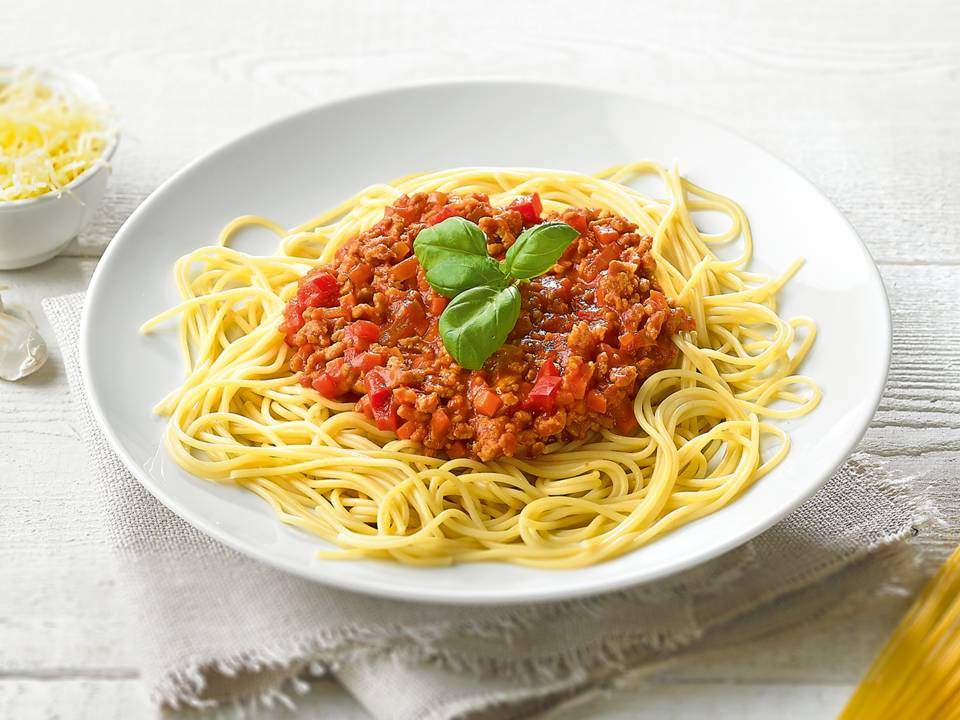

Spaghetti bolognese

Ingrediënten
- 500 g spaghetti
- 500 g gemengd gehakt
- 1 kg gezeefde tomaten
- 500 g wortelen
- 2 rode paprika’s
- 2 uien
- 2 teentjes knoflook
- 70 g geraspte emmentaler
- Boter
Bereiding
- Snipper de ui en knoflook fijn
- Was en snijd de paprika’s in blokjes. Rasp de wortels en snijd ze ook in fijne stukjes.
- Fruit de ui en knoflook glazig in een klontje boter. Voeg daarna de groenten toe en laat ze meestoven.
- Kruid alles met peper en zout.
- Voeg de gezeefde tomaten toe.
- Laat het geheel op een laag vuur stoven tot de groenten beetgaar zijn.
- Verhit de boter in een braadpan en bak het gehakt mooi bruin op een matig vuur.
- Voeg de saus bij het gehakt.
- Kook de pasta al dente in gezouten water.
- Dien de pasta op met de saus en werk af met geraspte kaas.